What it is
The engineer is a program on your PC. It reads data from the game and talks to you through your headset: it warns you about faster cars, tells you when to pit, what to change at the stop and where you lose time. It answers questions by voice – hold the button on your wheel, speak, release.
The Pit Wall is a web page (PC or phone). The whole team sees the car status, rivals, weather and the stint schedule live, and can send the driver messages that the engineer reads out.
It works on every track, with every car and class in Le Mans Ultimate and Assetto Corsa. You can drive alone (Solo mode) or as a team.
What you need
- Windows 10 or 11 and Le Mans Ultimate or Assetto Corsa (Steam; for Assetto Corsa Custom Shaders Patch is recommended – section Assetto Corsa).
- A headset with a microphone and a free button on your wheel (or a keyboard key).
- Internet (the voice, speech recognition and the Pit Wall work online).
- A free Groq key – without it the AI doesn't work (better speech recognition, AI answers, translation of less common messages); how to get it: AI.
Installation (2 minutes)
- Download the installer
PitWallCrew_Setup_….exefrom the FR Mods post on Patreon (a public post – free demo; you unlock the full version in the app with Log in with Patreon – it downloads itself and your settings stay). - Run the downloaded file. The installer isn't digitally signed yet, so Windows may show “Windows protected your PC” – click More info → Run anyway.
- In the installer choose your language (the program will use the same one; Spanish, Italian and Danish are chosen later in the app: Sound & language → Język / Language), then click OK, Next and Install. Installation takes about a minute, downloads nothing (Python is included) and needs no admin rights.
The program and your data go to
Documents\Pit Wall Crew. You can untick the Pit Wall Crew shortcuts on the desktop and in the Start menu. At the end choose whether to start the app, the voice tutorial and the full-version page on Patreon, and click Finish. - The app opens in the chosen language with a First steps window next to it – go through it in order (each item has an Open button):
- Team: at the top Create a new team… (first person) or the team code and password from your teammates; then your name – a new name is added to the team's drivers when you save; driving alone – Solo mode.
- Microphone and button: choose your microphone (the bar should move when you speak), click Set: press the button… and press the button on your wheel.
- Sound & language: choose the engineer's voice and click ▶ Listen.
- Groq key (free, for the AI): how to get it → Advanced → Your own Groq key → Check key.
- Patreon: on the Engineer page click Log in with Patreon – that's how you get updates.
- Click Save and restart the engineer module.
- In LMU once: Settings → Gameplay → Enable Plugins = ON (without it the program can't see the game data; Assetto Corsa: section Assetto Corsa). Go on track, hold the button and ask e.g. “how much fuel?”.
Old installation from the zip (INSTALL.bat)? Run the new installer. If the program was unpacked to Documents\Pit Wall Crew, your settings stay automatically.
If it was in another folder, copy config.toml and the data folder from the old program folder to Documents\Pit Wall Crew\Program (or just go through “First steps” again).
An older installation with a Python other than 3.12 shows a message after an update asking you to install it with the new installer.
Voice tutorial (1–2 minutes): on first start the engineer walks you through 5 steps – radio check, “how much fuel do I have?”, “who's behind me?”, two short button taps, “quiet”. You see right away whether the mic and button work. It starts only once a talk button is assigned (or you have pressed it once) and the microphone gives a signal; it never starts during a race. Skip: “skip tutorial” (or untick it at the end of the installation); again: Help → Manual → Voice tutorial.
Uninstall: Windows Settings → Apps → Pit Wall Crew → Uninstall (or Start menu → Uninstall Pit Wall Crew). It removes the program; your settings and recordings (config.toml, the data and recordings folders in Documents\Pit Wall Crew\Program) stay – to remove everything, delete the Documents\Pit Wall Crew folder afterwards.
The app window
The Pit Wall Crew icon opens the app. The engineer starts by itself and begins talking once you start the game and go on track. Switch the ☾ Dark / ☀ Light theme at the bottom of the left bar (instantly, no restart). Lap and sector times are coloured like on the Pit Wall: purple – class best, green – your best, yellow – slower.
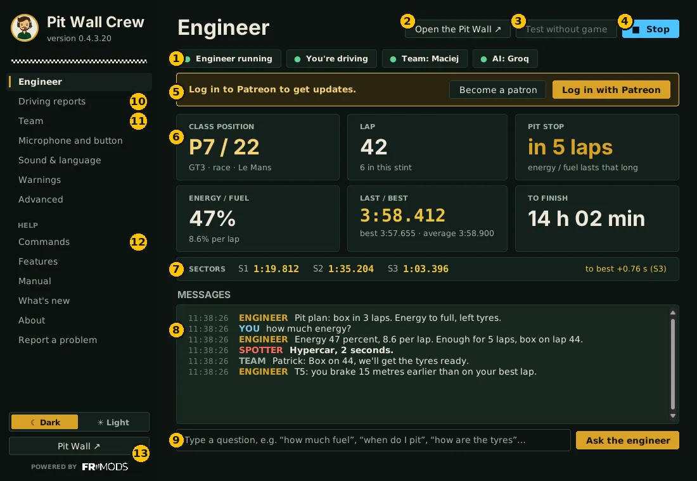
- Status: whether the engineer runs, sees the game (“You're driving” or “watching” when a teammate drives), team and AI connection. Green = OK.
- Open the Pit Wall – the team page in your browser, already logged in to the app's team (no password to type).
- Test without game – a simulated race. Check the voice, microphone and Pit Wall without starting LMU.
- Start / Stop the engineer.
- Patreon – log in to get updates. After logging in only “Log out of Patreon” stays.
- Key numbers: position, lap, laps to the pit stop, energy or fuel, lap times, time to the finish.
- Sectors – S1–S3 times of the last lap and the gap to your best lap (in brackets the sector where you lose the most).
- Messages – everything the engineer said, your questions and team messages. Red = urgent.
- Question box – type a question instead of speaking.
- Driving reports – reports after stints and races, also the current stint live (description below, in “Stint summary”).
- Settings – team, microphone, voice, warnings (see below).
- Help – commands, features, manual (also First steps), changes, about and Report a problem.
- ☾ Dark / ☀ Light – window theme. Pit Wall – same as button 2, from every page of the app.
Driving reports
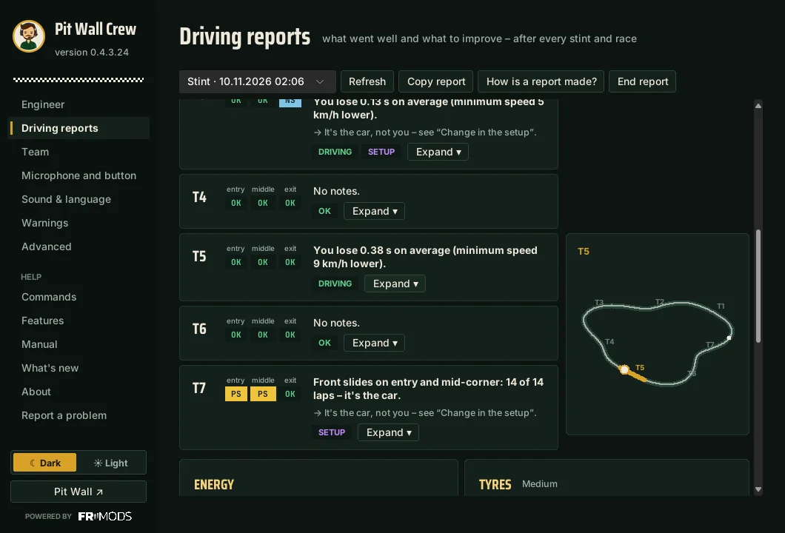
Settings
After every change click Save and restart the engineer module (bottom right).
Team
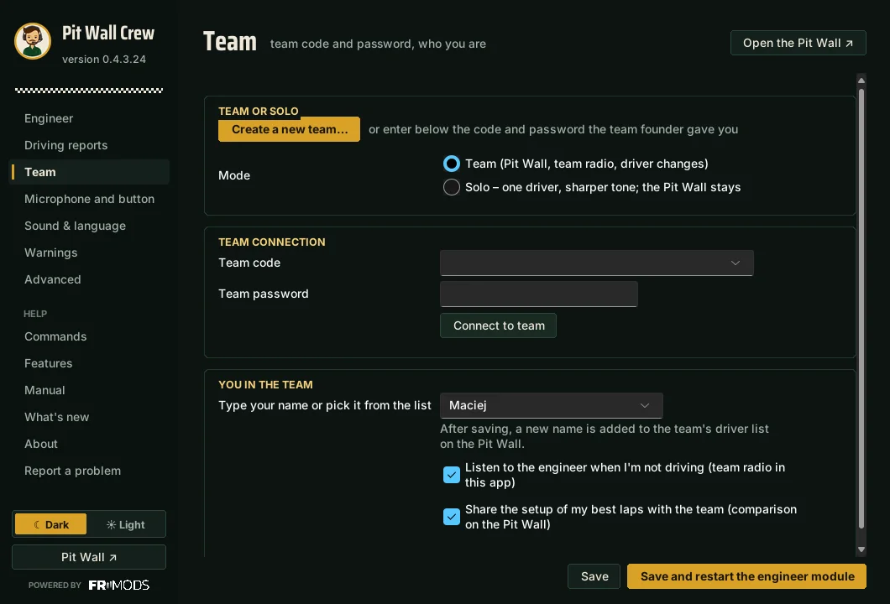
- Solo – you drive alone: nothing else to enter. The Pit Wall still works as your live view.
- Team – one person clicks Create a new team… (name and password) and gets a 6-character team code. The others enter that code and password, click Connect to team and choose who they are.
- The Team code field lists the teams this computer has connected to (codes and names only, no passwords). Pick one, enter that team's password and save. The Pit Wall in the browser remembers codes too: at login and on the Team tab (“Other teams on this device”).
- Share the code and password only privately – whoever knows them sees the car status and can message the driver.
- Listen to the engineer when I'm not driving – while a teammate drives you hear his engineer (team radio).
- Share the setup of my best laps with the team – the setup from the game goes to the team database with your best lap; the Pit Wall shows setup differences on the comparison map. Untick it if you don't want to share it.
- Laps on this computer (Advanced) – the program saves every lap to disk and never deletes anything by itself; Delete laps older than 180 days button. The Pit Wall fetches laps older than 14 days from here when someone selects them. Laps driven without internet are sent once the connection is back.
Microphone and button
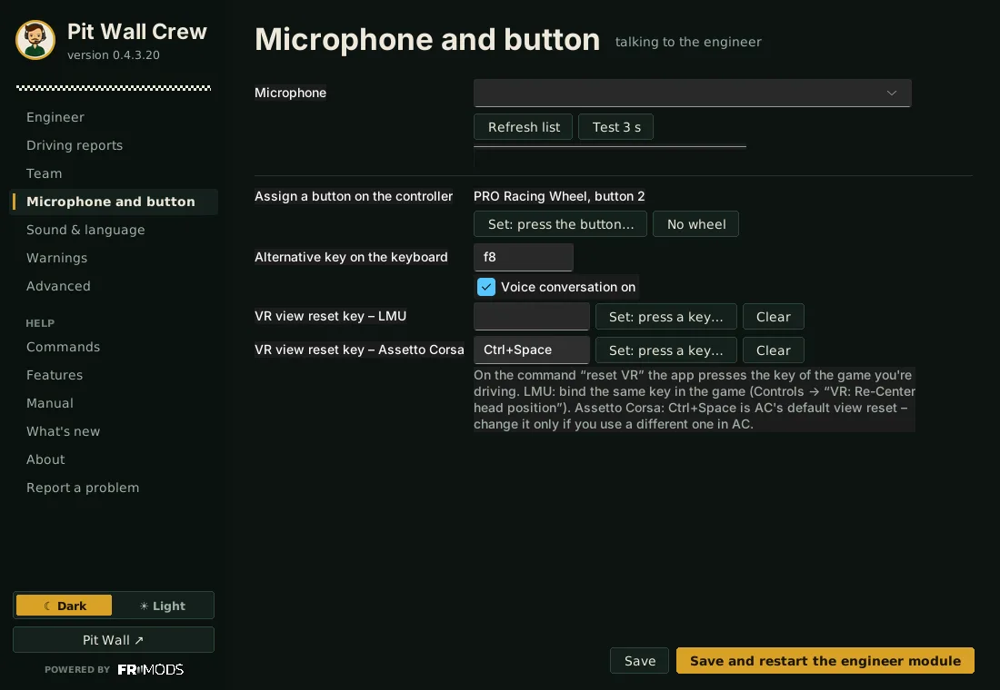
- Choose the microphone and click Test 3 s – say something and check the level moves.
- Set: press the button… and press the button on your wheel you'll use to talk (any button works, including MOZA buttons numbered above 32). A keyboard key works too. If the button doesn't work in game, set it again.
- VR view reset key – on the command “reset VR” the app presses this key (Set: press a key…). Bind the same key in the game (LMU: Controls → “VR: Re-Center head position”). A separate key for Assetto Corsa – Ctrl+Space by default; the app presses the key of the game you are driving.
Sound & language
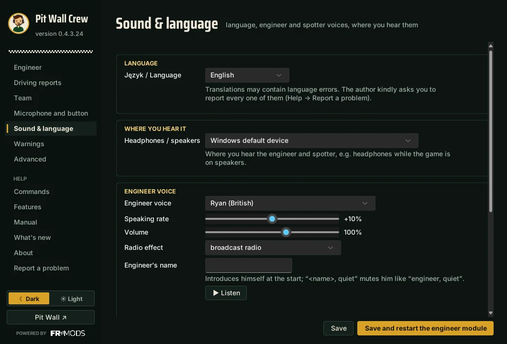
- Język / Language – at the very top, always labelled in English too, so it is easy to find.
- Headphones / speakers – the device you hear the engineer and spotter on, e.g. headphones while the game is on speakers.
- Engineer voice, speaking rate, volume, radio effect and the engineer's name. ▶ Listen plays a sample.
- If you give him a name (e.g. Mark), he introduces himself and “Mark, quiet” mutes him.
- Spotter voice – a separate voice for urgent calls about the track (car alongside, flags, incidents, lapping); “same as engineer” = one voice. Spotter radio effect – separate from the engineer (e.g. a clean spotter, the engineer over the radio). ▶ Listen to the spotter plays a sample.
- Units – km/h or mph, m or ft, °C or °F, l or gallons, pressure as in the game / bar / psi / kPa: this is how the engineer speaks, how reports are written and what the Pit Wall shows at first (everyone can change their own in ⚙). Camber degrees don't change.
Warnings
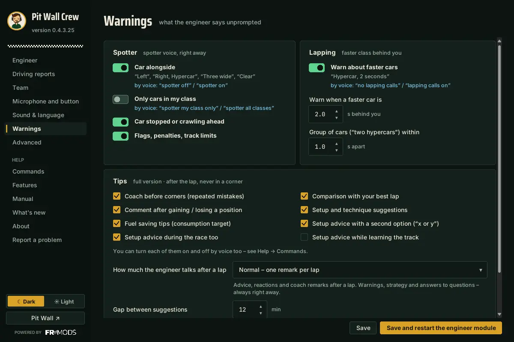
What the engineer says unprompted: lapping by faster classes (and from how many seconds), stopped cars, flags, coaching before corners, comparison with your best lap, comments after overtakes, setup suggestions. The coach, comparisons and suggestions start once your lap times are consistent (3 clean laps with similar times) – not while you are learning the track. Exception: Setup advice also while learning the track (or by voice “setup right away”) – when the setup is so bad that even laps are hard. Break between suggestions – the minimum number of minutes between tips. You can switch all of them on and off by voice while driving (e.g. “no coach”). Tyres still too cold after several laps with camber almost at minimum – the engineer suggests more camber (LMU, AC with CSP). After leaving the garage (practice, qualifying) the engineer checks the setup: camber almost at minimum, pressures or ride height almost at maximum – said once per setup. How much the engineer talks after a lap – A lot (everything at once), Normal (one remark per lap – default) or Little (one remark every 3 laps). Setup advice with a second option (“x or y”) – off: one change at a time. Warnings, strategy and answers – always right away.
Spotter: “Car left”, “Right side, Hypercar”, “Three wide” and which side the cars are on, “Clear” – always at the end, once nobody is alongside any more. “Spotter only for cars in my class” skips other classes. Silent in the pit lane, in qualifying (private in LMU) and in a race before the start. On the grid the engineer tells you when the steering wheel is turned more than 90°. By voice: “spotter off” / “spotter on”, “spotter my class only” / “spotter all classes”.
While a car is alongside, the engineer stays quiet (even with the spotter off) so you can focus on the fight – setting Warnings → Engineer stays quiet while a car is alongside: race only (default), always or never. Impact: a few seconds after a crash the engineer says “I'll check whether it's costing you time”; after two clean laps he gives the loss per lap, whether top speed dropped and whether a repair is worth it. If he doesn't know the repair time, he says up to how many seconds a repair pays off (e.g. “A repair up to 45 seconds is worth it, stop a longer one”) – you can stop the repair in the game. You can also tell him: “repair 38 seconds”.
Advanced
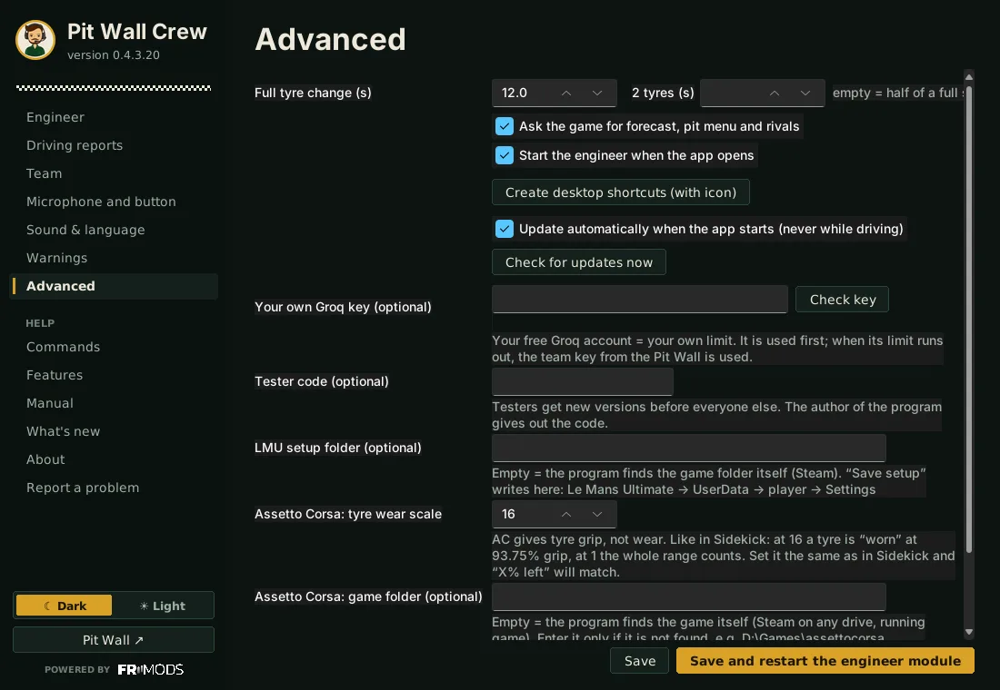
Full tyre change time, automatic engineer start, desktop shortcuts, updates and your own Groq key (optional – your own limit), tester code and “Ask the game for the forecast, pit menu and rivals”. LMU setup folder – usually empty (the program finds the game folder itself); “save setup” writes the new setup there.
Talking to the engineer
Hold the button, speak, release. Pressing the button also interrupts what the engineer is saying.
Examples: “how much fuel?”, “when do I box?”, “which tyres do we change?”, “who's ahead?”, “where am I losing time?”, “which sector am I losing most in?”, “who is on track?”, “what's the weather?”, “when will the first hypercar lap me?”, “quiet” (complete silence until the next press), “urgent only”, “repeat”.
The full list is in the app: Help → Commands.
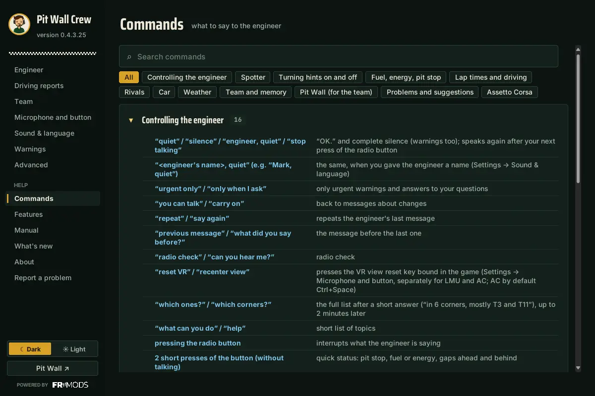
A question the program doesn't know goes to the AI (with a Groq key) together with the race data. Questions about the program itself (“how do I turn off the calls about prototypes coming up behind?”, “make the spotter stop calling the sides”) the AI answers from this manual and the settings: it gives the command or the place in the settings, and if there is no such option it says so and gives the closest one. A command said in your own words (“fresh rubber on the right”, “text Patrick to get up”) is matched by the AI against the list of all commands (also in the demo) and the app runs it; next time the same sentence works instantly without AI (“forget learned commands” clears them). Words the speech recognition got wrong are fixed by the app itself, without internet, and the names of your teammates and nearby rivals are passed to the speech recognition as hints.
- How the engineer talks: on his own he speaks in full sentences, each time with slightly different words (same content, without repeating the same sentence over and over). Several messages at once are combined into one, and outdated ones (e.g. a gap to a rival from a moment ago) are dropped. Now and then he reacts to what is happening: your best lap, getting back into the rhythm after a mistake, consistent driving, a rival ahead within reach. Answers to questions are short and to the point.
- Short presses of the button without talking: 1 – silence, 2 – quick status (pit stop, fuel or energy, gaps), 3 – repeat, 4 – previous message. By voice: “repeat”, “previous message”.
- In a hurry: add a swear word to your question (e.g. “how much fucking fuel do I have?”) and the engineer answers noticeably faster.
- Pit menu by voice: “at the stop energy 60 percent and right tyres”, “set the pit stop according to the strategy”. Also “change left tyres”, “new tyres”, “soft / medium / hard tyres”, “fuel 30 litres”, “fuel 40 percent”, “no fuel”, “fuel to the finish”; if speech is misheard, the AI matches the command. A teammate can do it from the Pit Wall: “Ask the engineer”.
- Rest of the pit menu: “front pressure 2 down”, “left front 140”, “pressures from measurements”, “repair damage” (or “repair bodywork only”, “repair everything”), “change brakes”, “wing 1 up”, “close front brake ducts”, “grille to 3”, “wets at the stop”, “driver change to Kamil”.
- Pit stop offer: 2 laps before the stop (and in the rain) the engineer asks “I can set the pit stop: … OK?” – “yes” sets the pit menu.
- Stint summary: after a pit stop, driver change or return to the garage (stints of 3+ laps) the full summary is on the Driving reports page of the app (file
recordings\stint_….txt, a copy on the Pit Wall): pace, mistakes (off-tracks, impacts, repeated lock-ups, wheelspin, ABS, TC – in which corners), where you lose time to your best lap, and in the full version also grip usage in corners and setup. During a stint: “stint summary”. Current stint (live) in the report list refreshes after every clean lap (from 3 laps); End report saves it as a regular report (e.g. at the end of practice) while the engineer keeps running. Copy report copies the report to paste (e.g. on Discord). The How is a report made? button explains in a few steps where the data comes from (mistakes and corner losses count after 3 even, clean laps). - Setup change history: after “I changed …” and 3 clean laps the engineer judges the change (helped / worse / no change) and remembers it for the track and car; every setup tip also names its side effect. In LMU and in Assetto Corsa (with CSP and the in-game app) the engineer sees the change in the garage himself (what and by how many clicks), even without “I changed”. When a change made no difference, he suggests the same direction harder (e.g. “8 to 9 made no difference, try 11”); wing and ride height only one click further. If that doesn't help either, he says the car doesn't react to it on this track and stops suggesting it. With uneven lap times he asks for 1–2 more laps. When a change made things worse, he says exactly what to go back to (“front anti-roll bar: go back to 10”, in AC: by how many clicks). When conditions before and after the change differed (warmer track, less fuel, worn tyres, another compound, wet track), he says so and that the verdict is less certain.
- Grip in corners (full version): “grip?”, “where do I have margin?”, “grip T5” – how close to the tyre limit you are on entry, in the middle and on exit (100% = the most you showed in that corner) and what to do where there is margin. LMU and Assetto Corsa.
- Setup or driving style: before suggesting a setup change the engineer checks 4–8 clean laps: is the problem there every time (car – setup advice) or only when you drive differently, e.g. faster entry or earlier throttle (driving – driving advice). Setup advice also takes conditions (cold or worn tyres, fuel, track temperature), pressures, the side effect of the change and the session type into account; if it is worse after 3 laps, go back.
- Setup: “summarize suggestions” – all suggested changes at once; “save setup” – a new “PWC_…” file with those changes in the track folder (original unchanged), load it in the garage.
Assetto Corsa
Pit Wall Crew also works with Assetto Corsa (AC1, Steam). It's the same program – the same engineer, spotter, Pit Wall and team database; the program detects by itself which game is running.
- Custom Shaders Patch (CSP) – strongly recommended (Content Manager → Settings → Custom Shaders Patch). With CSP you get the most: rain and puddles (Rain FX), pit stops by voice, understeer and oversteer analysis in corners, sectors, TC and ABS advice. Without CSP a simpler Python app works – with fewer features.
- In-game app – the program copies it into the game itself. Start Pit Wall Crew before Assetto Corsa; with CSP the app runs by itself in the background. Without CSP enable it once: Content Manager → Settings → Assetto Corsa → Python apps → tick Pit Wall Crew.
- Game on another drive – the program finds it by itself. If it doesn't, enter the game folder (the one with
AssettoCorsa.exe) in Settings → Advanced → Assetto Corsa: game folder. - Tyres – “X% left” like in Sidekick; set the same scale as in Sidekick in Settings → Advanced → Assetto Corsa: tyre wear scale. The engineer warns about 3 laps before the “cliff” (a sudden drop in grip). Your own threshold per car: “in this car I change tyres at 97” – a warning 2 laps earlier.
- Pit stop by voice (with CSP) – the engineer sets the in-game quick pit stop menu: “fill it up”, “wet tyres at the stop”, “front pressure 18”, “no repairs”. In AC the whole set of tyres is always changed.
- Pressures, gears, setup – “what pressures should I set?” gives cold pressures for the garage (psi); in practice “summarize suggestions” tells you gear ratio changes in clicks (“lengthen 6th gear by 3 clicks”); “save setup” – a new “PWC_…” file in the garage (the original stays unchanged).
- Cuts (RealPenalty) – online the engineer tells you about every cut warning as the server counts it; “how many warnings do I have?”.
- Corner names from the track (“Tosa”, “Acque Minerali”) instead of T1, T2 – you can ask by name: “how is Tosa?”.
- Spotter, rivals, flags, damage, strategy – like in LMU.
- What AC doesn't have: driver changes (the program always runs solo-style – no car handovers or briefings), virtual energy, grille and brake ducts – the engineer doesn't talk about them.
- The Pit Wall works like in LMU. Several cars of one team in a race – each has its own view (list at the top).
AI – free Groq key (once, 3 minutes)
- Go to console.groq.com and log in – a Google account is easiest. The account is free.
- On the left: API Keys → Create API Key, enter a name (e.g.
PWC) → Submit. - Copy the key right away (it starts with
gsk_) – Groq shows it only once. The key is free, with a daily limit. - Team (one person is enough): Pit Wall → Team → Team AI (Groq) → paste → Save key. The key reaches everyone in the team and only team members can see it.
- Driving solo or want your own limit: app → Advanced → Your own Groq key → paste → Check key (it should say “✓ The key works”) → Save and restart the engineer module. The AI (Groq) box above the field has a How to get a key? ↗ button (opens this chapter) and disappears once the key works.
- Done when the Engineer page shows a green AI: Groq.
Never send the key in a chat – paste it yourself.
Updates and Patreon
- New versions go to paying FR Mods patrons on Patreon.
- In the app, on the Engineer page click Log in with Patreon. Log in to Patreon in the browser and click Allow, then go back to the app. Only the Log out of Patreon button stays.
- Updates install themselves when the app starts – never while you drive. Your settings are kept.
- Testers enter a code from the author instead: Advanced → Tester code → Save and restart the engineer module.
Without Patreon or a tester code the program keeps working, just without new versions.
Full version and demo
- The full version works once activated on a computer: logging in with Patreon (or a tester code) activates it by itself, on up to 2 computers per account. Once activated it works for good, also after your support ends – just without new versions. A copied folder without logging in works as the demo.
- Demo (free): voice chat, flags, penalties, track limits, lapping, fuel, energy, when to pit, time to the finish, lap times, position, who's ahead and behind, tyres, brakes, damage, engine, weather, plus the spotter, “where am I losing time?” (the corner with the biggest loss), unlimited AI questions (with a free Groq key) and driving reports with a preview of what the full version would show (setup, grip). No Pit Wall, team, pit-menu setting, strategy, setup or full driving analysis.
- The ★ Full version page lists every paid feature with Pit Wall screenshots. Become a patron opens the FR Mods page on Patreon (also on the bar on the Engineer page). After a patron logs in, the app downloads the full version itself – settings are kept.
- Now and then the engineer briefly mentions the full version. Turn it off in Warnings → Mention full-version features or say “no ads”.
Pit Wall
Open it with the Pit Wall button in the app or at zepansrpl-creator.github.io/Pit-Wall-Crew (log in with the team code and password; your phone remembers them). The button in the app logs the Pit Wall in by itself – to the team the app is connected to, even if the browser was logged in to another team. The language selector is at the top, and the ☀ / ☾ button switches between the light and dark look.
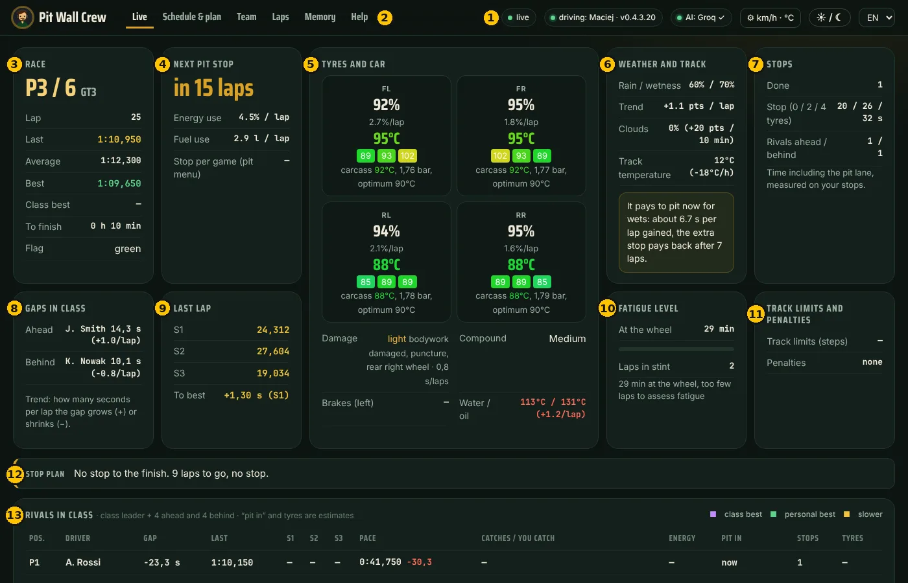
- Status: whether data is live, who is driving, whether the AI works.
- Tabs: Live, Schedule & plan, Team, Laps (at the top a session summary: best and average lap, consistency, fuel and energy per lap – for each driver and stint), Memory, Help.
- Race: class position, lap, lap times, time to the finish, flag.
- Next pit stop: in how many laps, energy and fuel use, what to do at the stop.
- Tyres and car: wear and temperatures of each tyre, damage, engine, brakes.
- Weather and track: rain, wetness, clouds, track temperature and the engineer's remarks.
- Stops: how many stops are done, the stop time (0 / 2 / 4 tyres) measured on your own stops, how many stops the rivals ahead and behind have made.
- Gaps in class: gap to the car ahead and behind, and the trend (how many seconds per lap it grows or shrinks).
- Last lap: sector times S1–S3 and the gap to the best lap.
- Fatigue level: how long the driver has been driving and how many laps in the stint; fatigue assessed from lap times.
- Track limits and penalties: track limits warnings and penalties.
- Stop plan: what to do at the next stop, or whether you reach the finish without stopping.
- Rivals in class: gaps, pace, who catches whom, energy, predicted pit stop.
- Teammate comparison: after every clean lap – in which corners and by how much a teammate is faster (his best lap in similar conditions). In Assetto Corsa also a teammate in a different car of the same class – then only where and by how much, no advice.
- Stint schedule: who drives, when the change is, what happens at the stop, how many minutes the schedule moved against the plan. With no plan for today it is generated automatically for the current driver – from the race length and the tyres available in the game.
- Look: dark theme by default, ☀/☾ toggle at the top. Coloured times: purple – class best, green – your best, yellow – slower. The “Damage” bar under the map appears only when the car is damaged (car diagram, loss per lap, top speed, how long a repair may take and advice). In a lap-limited race “To finish” shows laps (e.g. 12 / 40).
- Team founder: has their own password (set when creating the team, or in the Team tab: “Become the founder”). Only they can remove or rename drivers and change the team password; they log in to the Pit Wall with “I am the founder” ticked.
- Several team cars in one race: each car has its own view (list at the top, with the car number); messages and questions go to the driver of the selected car. Each driver hears their own engineer and spotter.
- Live schedule: a stint bar (colour = driver, red “NOW”). Laps: filters (session – each race separately; car – when several team cars race, each gets its own table; driver, stint, clean only), a pace chart, coloured times and sectors S1–S3. Comparison map: track and car, up to 3 laps from the list (🟢 a driver's best valid lap – on the track and in each session; sessions collapsed; filters; “🟢 Best laps” button). In the team database: laps from 14 days, best in conditions (until beaten or 90 days) and 📌 (no limit); older ones 💾 – from the driver's disk while their Pit Wall Crew is running. Map: section colour = who is fastest, braking points, sector boundaries and times, values on hover, zoom; conditions bar (incl. track rubber), “where to gain the most”, ideal lap, speed / throttle / brake / gear chart and time lost; clicking a corner puts the map next to the corner details; setup differences; “🔗 Copy link”. ⚙ Units in the header (km/h–mph, m–ft, bar–psi–kPa, °C–°F, l–gal). Memory: notes as cards with search and a track filter. Help: a table of contents.
Further down there are the track map with all cars and the team radio: “To driver” (the engineer reads the message), “Ask the engineer” (answer by voice), “Ask (text only)”, “To memory”.
On a phone
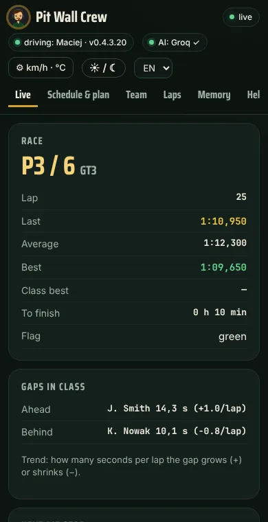
Team tab
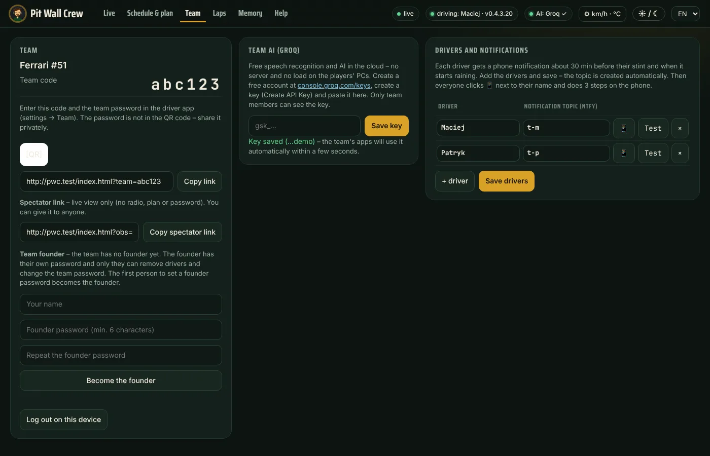
Team code and QR code for the wall, drivers with notification topics, the Groq key and a spectator link –
live view only, no radio and no plan; you can give it to anyone. When several team cars are on track (e.g. Assetto Corsa), the spectator picks which car to watch from the list at the top (driver – car). The choice stays in the address (&auto=…), so you can share a link to a specific car.
Schedule & plan (before a long race, one person)
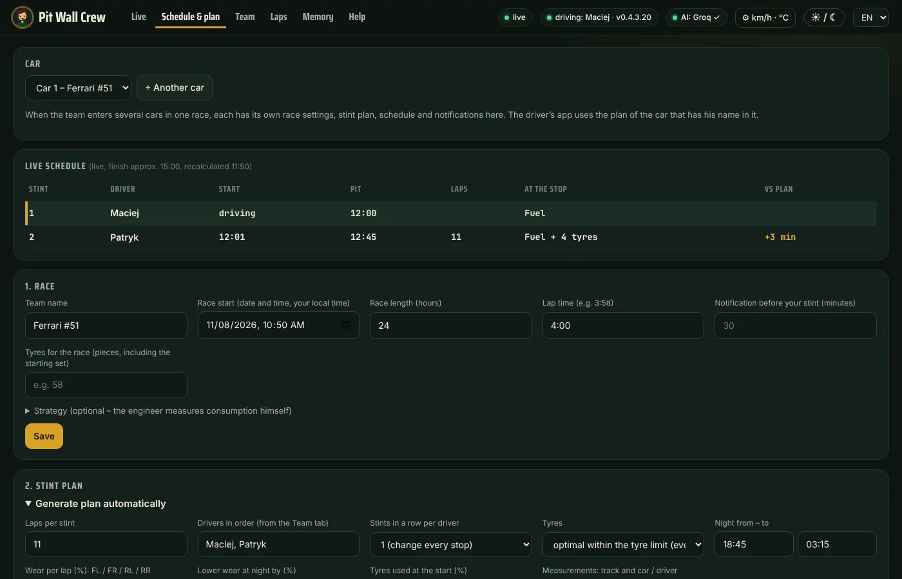
- Car (at the top): when the team enters several cars in one race, + Another car – each has its own race settings, stint plan, schedule and notifications. The driver’s app uses the plan of the car that has his name in it.
- 1. Race: start date and time, length, lap time, tyres for the race → Save.
- 2. Stint plan → Generate plan automatically: laps per stint, driver order, tyre wear (in Measurements pick the track and car and the driver – Load fills in the tyre wear and whole-stop times measured in your sessions), stop times, Tyres used at the start (%) – when you start on the qualifying set → Generate plan. The program spreads the tyres so they wear as evenly as possible.
- Adjust the table if needed: driver from the list, laps, Left / Right = change the tyres on that side → Save plan. The counter shows whether you stay within the tyre allocation.
During the race the schedule recalculates itself from the real pace. The engineer pits and changes tyres according to the plan (unless a tyre wouldn't last or energy runs short). The plan applies to a race of the length entered in “1. Race”.
Phone notifications (every driver, 2 minutes)
- Install the free ntfy app (Google Play / App Store).
- On the Pit Wall: Team → click 📱 next to your name – your topic and QR code appear.
- In ntfy tap +, enter the topic and Subscribe (or scan the QR code).
- Click Test next to your name – “Pit Wall Crew – test” arrives on your phone.
The notification comes about 30 minutes before your stint, a second one if the stint moves by 10 minutes or more, and when it starts raining. The driver can also message the whole team by voice: “send a message to the team: boxing this lap” (or one person: “phone notification Adam: …”).
Long race (e.g. 24 h)
- The driver in the car keeps Pit Wall Crew running for the whole stint – his app sends data to the wall and the notifications.
- The others may turn off the game, the app and the PC. After the phone notification start the PC, LMU and Pit Wall Crew before you get in the car.
- The plan, schedule, messages, team memory and the handover briefing are in the team database – the program fetches them itself.
Rehearsal before the race (15 minutes)
- Everyone starts Pit Wall Crew – green Team and AI: Groq.
- One driver clicks Test without game. The others open the Pit Wall – data should be “live”.
- The driver asks by voice “how much fuel?” – everyone hears the answer.
- Send “To driver” from the wall – the engineer reads the message out.
Fair share (LMU)
In team events every driver who completed at least one lap must have at least 50% / number of drivers of the team's laps (2 drivers – 25%, 3 – 16.7%, 4 – 12.5%, 5 – 10%, 6 – 8.3%), otherwise the whole lineup gains no DR/SR. The engineer counts each driver's laps, reminds you at stops how many each one is missing, warns when it gets tight and answers “fair share?”. On the Pit Wall – Live tab.
Race summary
At the finish the engineer briefly says the result and compares it with the starting position: praise for places gained, encouragement after losing some (impacts and penalties are taken into account). The full summary (result, stops, fair share, your pace and consistency, off-tracks, consumption) is in the app window, on the Pit Wall and in recordings\podsumowanie_….txt.
When something doesn't work
| Symptom | What to do |
|---|---|
| “Waiting for LMU” although the game runs | LMU: Settings → Gameplay → Enable Plugins = ON, then restart the game. |
| The engineer doesn't hear me / “I can't hear you” | Microphone and button → Test 3 s. Check the mute on the headset and Windows → Privacy → Microphone. |
| “Wrong team code or password” | Team → correct it → Connect to team → Save. |
| I forgot the team code or password | Code: the Team tab on the Pit Wall of anyone logged in (or the team list in the app and on the page). Password: the founder knows it, and so does everyone who entered it in the app. A new team password is set by the founder: Pit Wall with “I am the founder” ticked → Team → Change the team password; if he doesn’t remember it either – “Ask the author for a new password” and Help → Report a problem with the team code. |
| Pit Wall: “no data from the game” | The driver's app must be running with a green “Team”. |
| “AI: Groq – wrong key” | Paste the key again (Pit Wall → Team → Team AI). |
| Every message is heard twice | The program runs twice: close the app, end “pythonw” in Task Manager, start it once. |
| No notifications | Race start and drivers in the plan, topic in ntfy, Test button; the app running on someone's PC. |
| The game stutters | Usually not enough graphics memory: lower textures, fewer visible cars and shadows, close other programs. |
| “Windows protected your PC” when installing | The installer isn't digitally signed yet. Click More info → Run anyway. |
| Windows 11 blocks the installer with no “Run anyway” | “Smart App Control” is on and doesn't let programs without a digital signature run. You can turn it off (Windows Security → App & browser control), but Windows won't let you turn it back on later. |
| AVG or Avast scans the installer (“CyberCapture”) | The antivirus checks a new file without a digital signature in the cloud. Wait for the result or click Open anyway. |
| “I didn't understand”, the engineer's voice cuts out, the messages say “Your antivirus (Avast/AVG) is blocking…” | Avast/AVG blocks the app's connections. Avast/AVG → Menu → Settings → General → Exceptions → Add exception → the folder Documents\Pit Wall Crew, then restart the app. |
Report a problem or a suggestion
In the app: Help → Report a problem, on the Pit Wall: the Help tab. It goes straight to the author. While driving say “report a bug: …” (e.g. “report a bug: the spotter said left but nobody was there”) – the app adds your spot on track, the lap and the engineer's last messages; just “report a bug” – the engineer asks what happened. With your consent the app can automatically send a report when it crashes (no voice recordings, keys or passwords) – you switch this on or off on the same page. There you can also turn off the anonymous user counter (a random installation number, version and language – no names or game data) and the feature usage statistics (feature names, counts and startup time – never what you asked) and the sentences the AI matched to commands (no names – the most common ones are added to the app for everyone). Updates download only the changed files when you have the previous version. Separately you can turn off sending questions the engineer didn't understand (only the text, no names – the author adds missing commands). Details: Privacy.
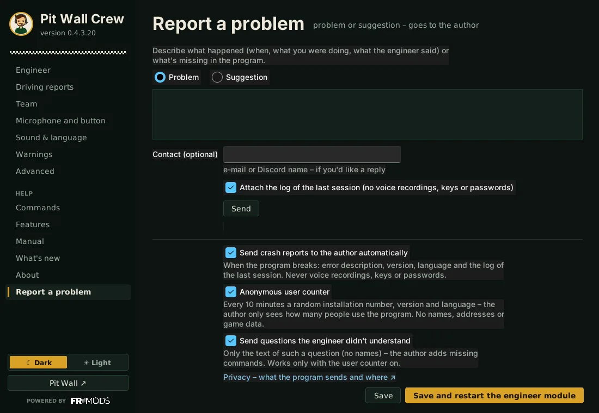